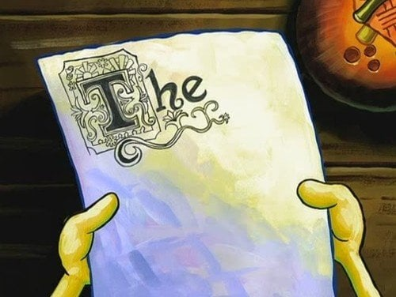
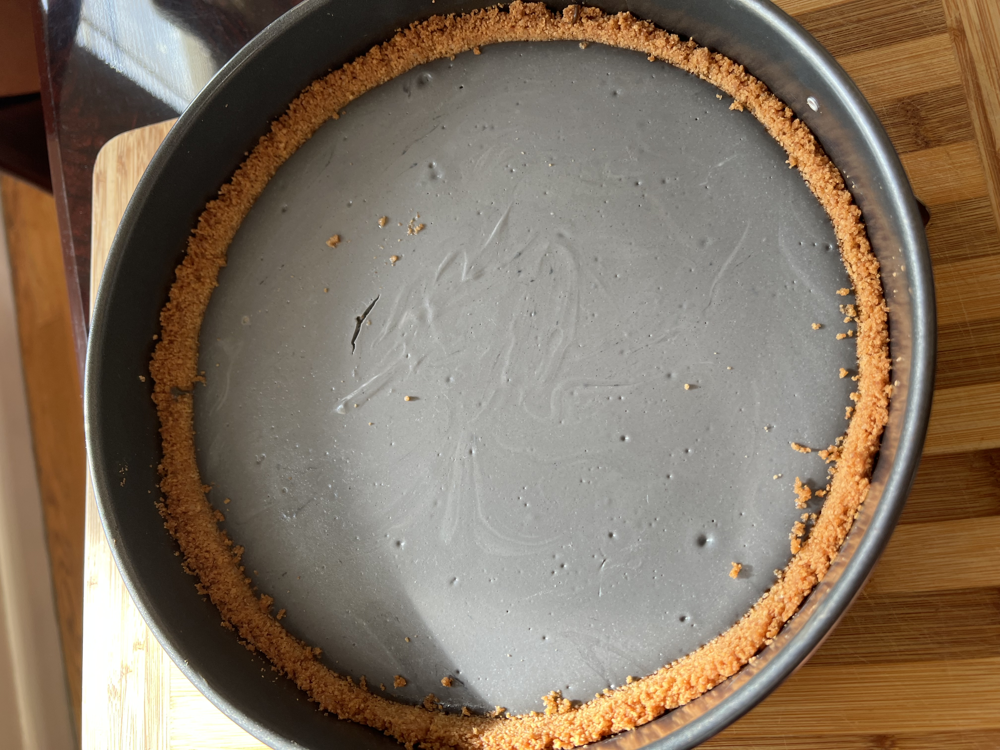

Unda Construkshin üèóÔ∏è




The Story
My brother brought me to a party where a chef/baker had a no bake black sesame cheesecake. I tried it, and that shit was GASSSS ⛽. However, I know deep in the heart of the cards…no bake is wack. I can improvise, adapt, overcome. Alas, my journey began to create a bake version.”